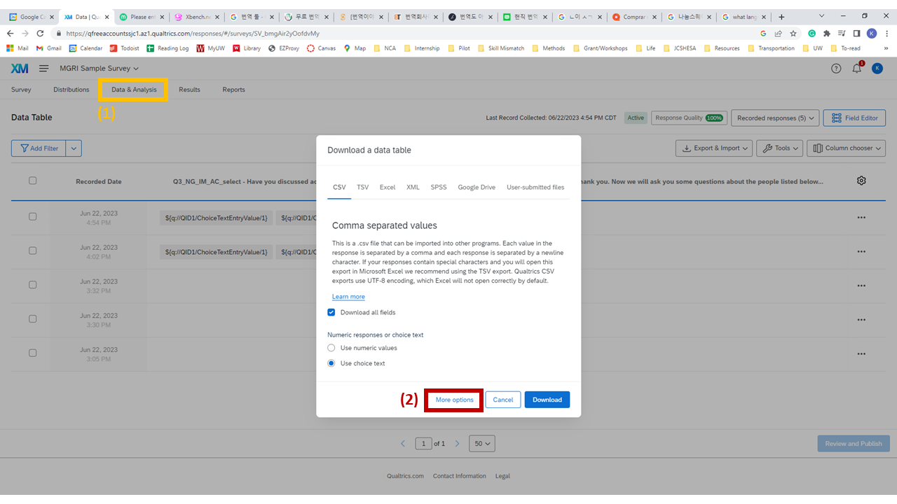
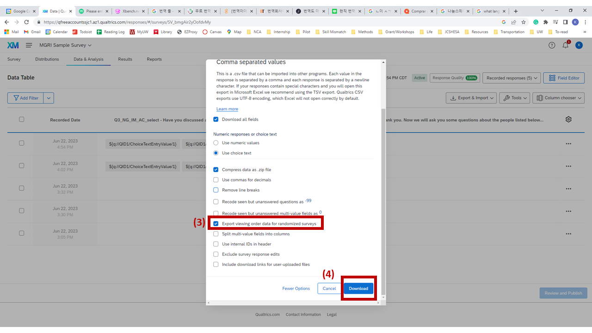
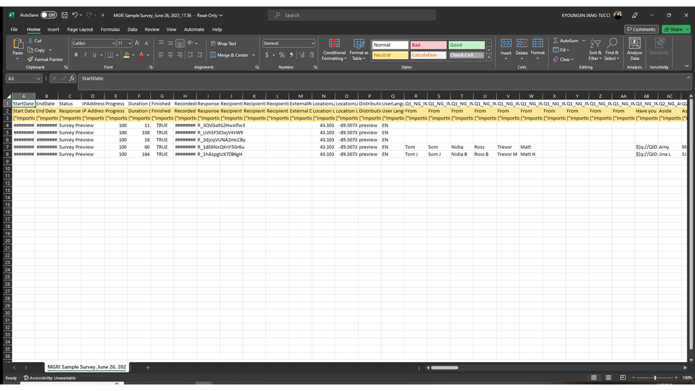

Data Cleaning in R
Step 1: Download and Prepare the Data
Note
This data-cleaning introduction is focused on generating datasets suitable for using the egor package in R. Once you create an egor object, you can convert the object for other social network analysis packages such as "igraph."
First, let's download the raw data from Qualtrics.
 Export Data menu" />
Exporting data from Qualtrics — Data & Analysis > Export & Import > Export Data
1
Go to the "Data & Analysis" tab. Click "Export & Import" > "Export Data…"
2
Click "More options."

Enabling "Export viewing order data for randomized surveys" in the export options
3
Check "Export viewing order data for randomized surveys."
4
Click "Download" and download the CSV file.

Deleting the second and third rows from the downloaded CSV before use
5